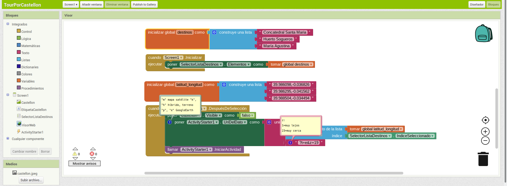
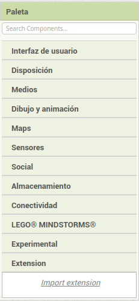
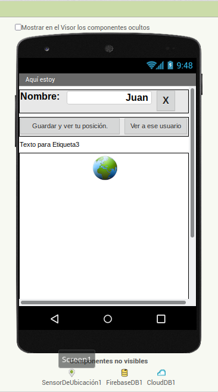
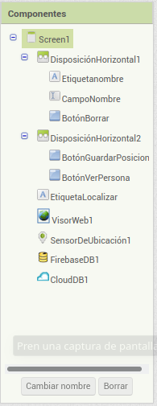
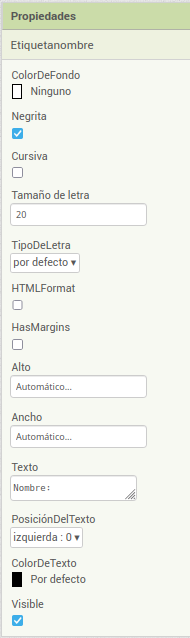
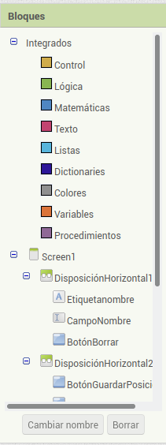
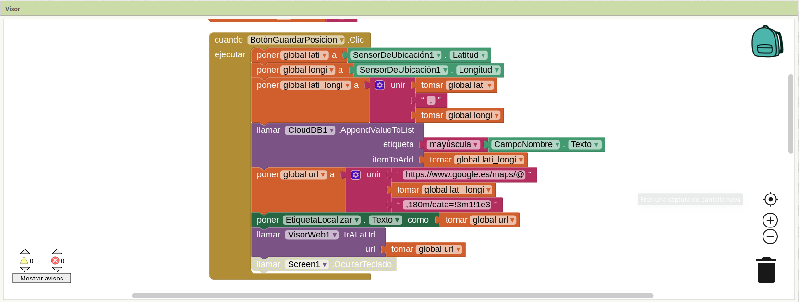

Tema 3: APP Inventor
Introducción
App Inventor es un entorno de desarrollo de aplicaciones para dispositivos Android.
Sólo se necesita un navegador web y un télefono o tablet Android.
Si no disponemos de móvil podemos probar las aplicaciones en un emulador.
Actualmente existe una aplicación para IOS que permite probar lo que vamos diseñando en el navegador.
App Inventor se basa en un servicio web que nos permite almacenar nuestro trabajo y nos ayuda a realizar un seguimiento de nuestros proyectos.

Se trata de una herramienta de desarrollo visual muy fácil de usar, con la que incluso las personas que no son programadores pueden desarrollar sus aplicaciones.
Plataforma
La dirección es: http://ai2.appinventor.mit.edu/
La programación se realiza utilizando bloques que van uniendo como si de un puzle se tratara.
Una vez unidos los bloques, se ejecutarán en la secuencia establecida.
Entorno
Al construir las aplicaciones para Android trabajaremos con dos herramientas: App Inventor Designer y App Inventor Blocks Editor.
- Diseñador
 En el Diseñador construiremos la Interfaz de Usuario, eligiendo y situando los elementos con los que interactuará el usuario y los componentes que utilizará la aplicación.
En el Diseñador construiremos la Interfaz de Usuario, eligiendo y situando los elementos con los que interactuará el usuario y los componentes que utilizará la aplicación. - Editor de Bloques  En el Editor de Bloques definiremos el comportamiento de los componentes de la aplicación.
Diseñador
En el modo diseño las partes que encontramos son:
- Paleta
- Visor
- Componentes
- Medios
- Propiedades
Paleta
Los bloques de la Paleta en el modo diseño se organizan por tipos. Según el tipo tienen asignado un color de manera que sea más sencillo trabajar con ellos.

Visor
A la zona de pantalla en la que aparece la pantalla de un móvil arrastraremos los elementos seleccionados en la paleta para ir creando el aspecto de nuestra aplicación.

Componentes
En esta zona irán apareciendo los componentes de la paleta que hemos arrastrado a la pantalla en orden desde el de más arriba hasta el de más abajo. En esta zona podremos cambiarles el nombre y borrarlos. 
Medios
En esta zona irán apareciendo todas aquellas imágenes, sonidos, música, vídeos… que subamos a nuestra aplicación para completar su funcionamiento. No aparecen en pantalla sino en esta zona.
Propiedades
Cada vez que en la zona de Componentes marquemos uno de los elementos que componen la aplicación, en esta zona podremos configurar sus propiedades.
No todos los componentes tienen las mismas propiedades.

Editor de Bloques
En este entorno de programación las partes que encontramos son:
- Bloques
- Medios
- Visor
Bloques
Los bloques de la zona de la izquierda se organizan por tipos.
Según el tipo tienen asignado un color de manera que sea más sencillo trabajar con ellos.
Debajo de los bloques integrados, que son los comunes a cualquier proyecto aparecen los bloques propios de cada componente que hayamos ubicado en el visor en la fas e de diseño.

Medios
En esta zona irán apareciendo todas aquellas imágenes, sonidos, música, vídeos… que subamos a nuestra aplicación para completar su funcionamiento. No aparecen en pantalla sino en esta zona.
Visor
A la zona central arrastraremos los bloques seleccionados de la izquierda y los iremos uniendo como si fuera un puzzle. La ejecución se encargará de ir ejecutándolos uno a uno.

En la zona inferior derecha del visor tenemos unos botones circulares que nos permiten:
-
centrarnos
-
hacer zoom
-
eliminar el bloque seleccionado
En la zona superior derecha del visor tenemos la mochila en la que podremos guardar bloques y procedimientos para poder reutilizarlos cuando los necesitemos.
En la zona inferior izquierda nos aparecen los avisos de errores cometidos en la programación.
Pueden ser desde leves (no afectan al correcto funcionamiento de la aplicación) hasta graves (provocan que la aplicaciçon no se pueda ejecutar).
Barra Superior
En la barra superior tenemos varias opciones como son:
-
Proyectos: Permite cosas como abrir, guardar, imporar y exportar proyectos
-
Conectar: permite cosas como utilizar el emulador o probar en el móvil lo que vamos haciendo en la aplicación.
-
Generar: permite generar el instalable de nuestra aplicación.
-
Settings
-
Ayuda
Barra Menú Proyecto

En el menú tenemos opciones como:
- Screen, permite cambiar de ventana en el caso de que nuestra aplicación se componga de varias.
- Añadir ventana, añade una ventana más a nuestro proyecto.
- Eliminar ventana, elimina la ventana de nuestro proyecto en la que nos encontramos.
- Publish to Gallery